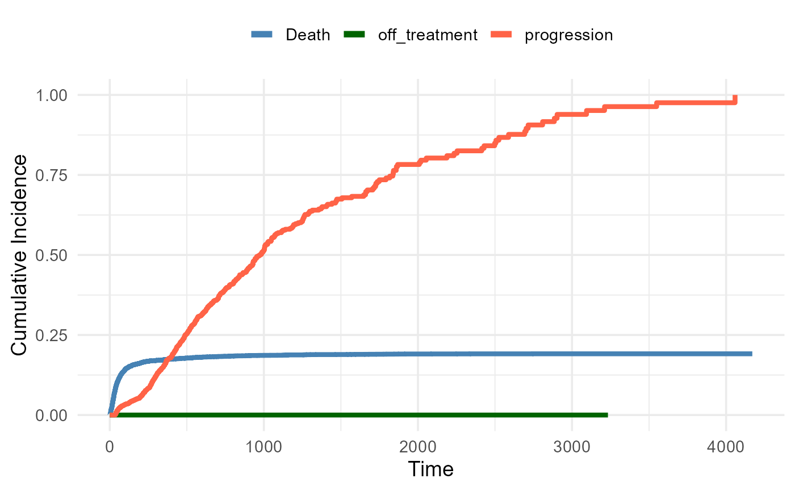
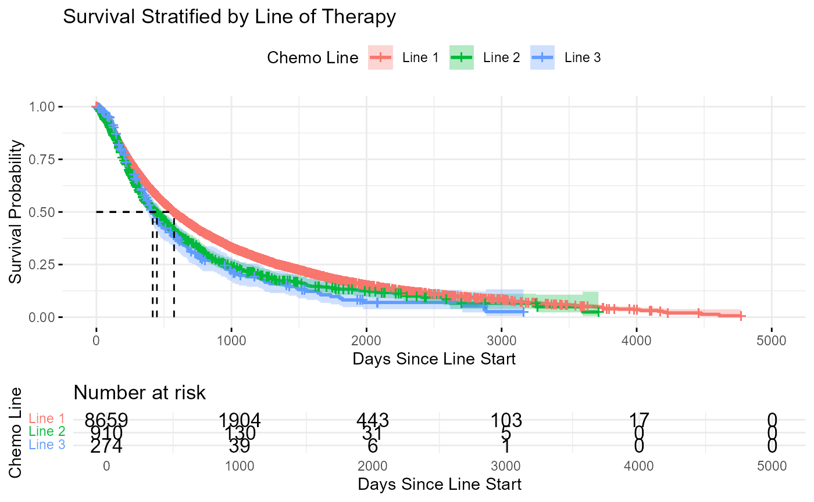

Sample Size Breakdown
## The total number of nsclc patients is 18419
## The total number of nsclc patients is 16541
## The total number of nsclc first-line patients is 9333
## The total number of nsclc second-line patients is 1016
## The total number of nsclc third-line patients is 324
##
##
## Table: Number of patients who received cisplatin|carboplatin by line of therapy
##
## |Line_of_Therapy | Number_of_Patients|
## |:---------------|------------------:|
## |First Line | 9333|
## |Second Line | 1016|
## |Third Line | 324|
## The total number of nsclc patients with overlapping lines that were filtered out is 1340
## The total number of nsclc patients with single doses that were filtered out is 1338
## The total number of nsclc patients with treatment start pre-2010 that were filtered out is 1
##
##
## Table: Filtered Transition Counts Table
##
## |state |next_state | n|
## |:------------------------|:-------------|---:|
## |Death |NA | 880|
## |On_Treatment_Target_Line |Death | 18|
## |On_Treatment_Target_Line |off_treatment | 371|
## |On_Treatment_Target_Line |progression | 803|
## |On_Treatment_Target_Line |NA | 45|
## |off_treatment |Death | 155|
## |off_treatment |progression | 119|
## |off_treatment |NA | 97|
## |progression |Death | 707|
## |progression |NA | 215|
Descriptive statistics of episodes stratified by line and state
Summary of Episode Duration by Line and State (Excl. Death
State)
| Line 1 - On_Treatment_Target_Line |
65 |
303.9 |
160.0 |
63.0 |
384.0 |
0 (0%) |
1 (1.5%) |
| Line 1 - off_treatment |
13 |
619.8 |
372.0 |
138.0 |
803.0 |
4 (30.8%) |
6 (46.2%) |
| Line 1 - progression |
54 |
441.3 |
228.0 |
85.2 |
625.2 |
44 (81.5%) |
10 (18.5%) |
| Line 2 - On_Treatment_Target_Line |
899 |
190.2 |
129.0 |
63.0 |
239.5 |
14 (1.6%) |
37 (4.1%) |
| Line 2 - off_treatment |
279 |
197.5 |
50.0 |
19.0 |
209.0 |
124 (44.4%) |
68 (24.4%) |
| Line 2 - progression |
656 |
365.2 |
183.5 |
78.0 |
457.2 |
489 (74.5%) |
167 (25.5%) |
| Line 3 - On_Treatment_Target_Line |
273 |
207.2 |
133.0 |
72.0 |
266.0 |
4 (1.5%) |
7 (2.6%) |
| Line 3 - off_treatment |
79 |
152.0 |
67.0 |
21.5 |
171.5 |
27 (34.2%) |
23 (29.1%) |
| Line 3 - progression |
212 |
349.6 |
178.5 |
79.0 |
423.5 |
174 (82.1%) |
38 (17.9%) |
| Overall - On_Treatment_Target_Line |
1237 |
199.9 |
132.0 |
66.0 |
248.0 |
18 (1.5%) |
45 (3.6%) |
| Overall - off_treatment |
371 |
202.6 |
59.0 |
20.0 |
209.5 |
155 (41.8%) |
97 (26.1%) |
| Overall - progression |
922 |
366.1 |
189.0 |
78.2 |
456.0 |
707 (76.7%) |
215 (23.3%) |
Cut-points
Cumulative incidence functions of transitions out of each health
state
Exit from on-treatment

Exit from progression

Exit from Off-treatment

Restricted mean survival time survival: comparisons across
lines
Restricted Mean Survival Time Comparisons Between Lines of
Therapy
| 3 vs 2 |
3.66 |
-30.60 |
37.92 |
0.8343 |
438.93 |
442.59 |
| 3 vs 1 |
76.47 |
10.53 |
142.41 |
0.0230 |
438.93 |
515.40 |
| 2 vs 1 |
72.81 |
11.44 |
134.19 |
0.0201 |
442.59 |
515.40 |
KM curve: time to death (overall survival)

KM curve: time to death (stratified by line)

Competing Risks Regression
## Competing Risks Regression
##
## Call:
## crr(ftime = fg_data$ftime, fstatus = fg_data$fstatus, cov1 = model.matrix(~factor(fg_data$group))[,
## -1])
##
## crr converged: FALSE